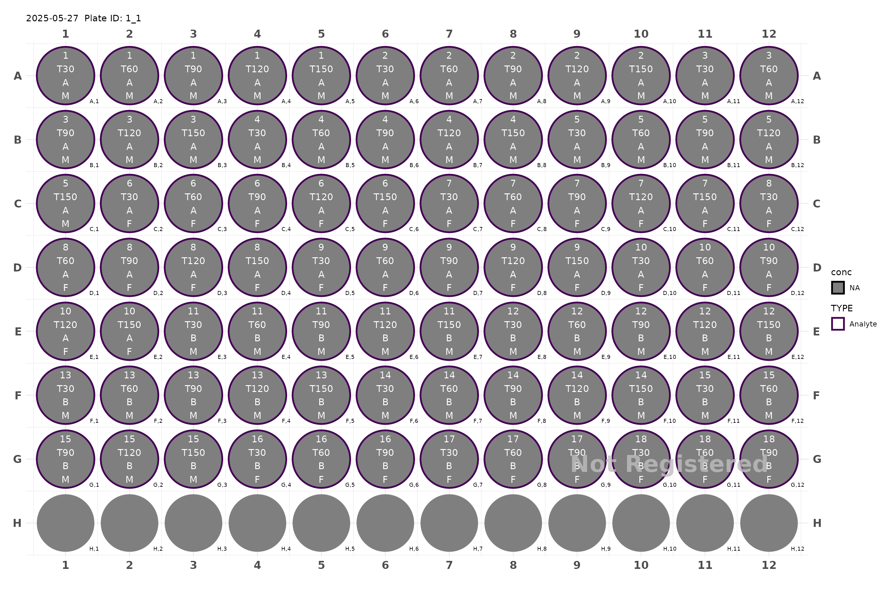
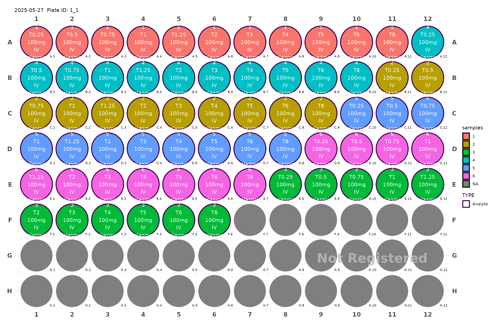
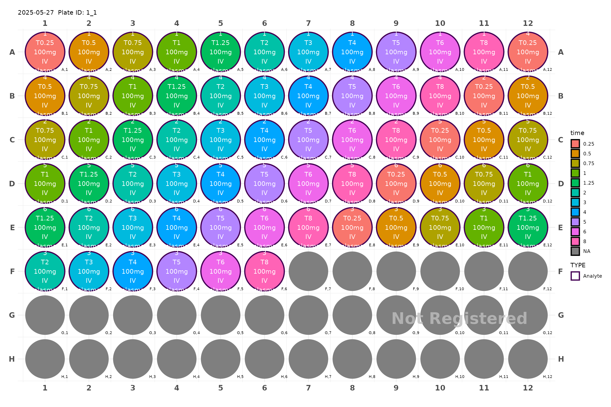

study <- generate_96() |>
add_samples(1:5, dosage = "A", factor = "M", time = 1:5*30) |>
add_samples(6:10, dosage = "A", factor = "F", time = 1:5*30) |>
add_samples(11:15, dosage = "B", factor = "M", time = 1:5*30) |>
add_samples(16:18, dosage = "B", factor = "F", time = 1:3*30)
plot(study)
#> Plate not registered. To register, use register_plate()
#> Warning: Removed 12 rows containing missing values or values outside the scale range
#> (`geom_text()`).
plot_design(study)
data(Indometh)
plate <- generate_96() |>
add_samples(
samples = Indometh$Subject,
time = Indometh$time,
dosage = "100mg",
route = "IV",
cmt = "plasma",
vtime = TRUE)
plot(plate, color = "samples")
#> Plate not registered. To register, use register_plate()
#> Warning: Removed 30 rows containing missing values or values outside the scale range
#> (`geom_text()`).
plot(plate, color = "time")
#> Plate not registered. To register, use register_plate()
#> Warning: Removed 30 rows containing missing values or values outside the scale range
#> (`geom_text()`).
plot_design(plate)